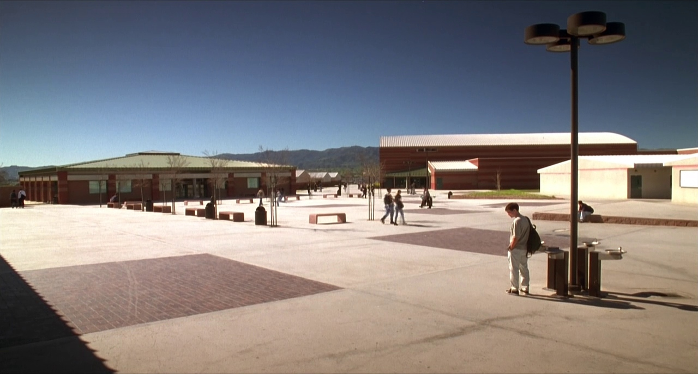
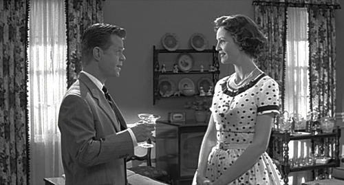

Blog Assignment 1
1. Post a personal experience that you have with color and emotions.
Color has always had a huge impact on me from a gaming standpoint. One of the most staple uses of color in the gaming world is the usage of red around the edges of the screen to indicate that damage is being taken. The red elicets an almost wincing reaction from the player. It is an excellent way to communicate damage being taken. When this technique is not used, a very rare circumstance, the game simply does not feel as immersive. Another major color related game mechanic is the health bar. Furthermore, anything that has to do with health in games ia almost exclusivly colored red. Much like how the first mechanic I mentioned helped to make the player feel as if they were losing health, the color red in general makes the player think of vitality. When you see a red potion in a game, it is almost always a health potion. This is basically a universal rule. Same goes for blue potions being magic regeneration. The color red makes the player think of their health. I believe that it is because of the way that red makes the player feel. Red is vitality, red is danger, red is loud.
I am half cuban and have lived my entire life in the United States. I am of two major cultures. On my fathers side I am American with all that implies in regards to culture. From my Mom's side I am Cuban, I have been deeply involved with my hispanic heritage as i am interested in learning about it. The color red has similar symbolism in both these cultures. It is the color of passion, energy, and vitality. This alignes with the usage I mentioned above relating to the color in video game media. The color red symbolizes health and the loss of it. It catches the eye, which makes it easy for the player to spot their health bar. It is an extremely versatile
2. Share findings about a specific color’s meaning in another culture from your own. Not mentioned in the slides. Elaborate and specify.I decided to research the color red in Polish folklore. Poland, being an eastern bloc country, has a heavy affiliation with communism. Thus, in their modern culture the color red and cimmunism are heavily intertwined. However, in the more traditional folklore the color red symbolizes fertility and protection. It is interesting to see how the meaning of colors can be affected by the events a country is a part of. The traditional meaning of the color stays, but a new modern interpretation enters the picture as well.
3. Where in the real-world might color theory be applied to, NOT mentioned in the slides or supplementary readings from the Web, where it can manipulate people’s mood. Elaborate and specify.One large way that color theory is applied in the 'real-world' is through signs. Whether we are discussing traffic signs or otherwise is not important as the use is prevalent in both. Traffic signs and lights in particular are perhaps the most prolific use of color theory in everyday life. Stop signs are a bright red, this color choice beings instant attention to the driver. The light system also uses this system. Red means stop, the color is easy to interpret and makes the driver feel the need to stop. Green, being a more calm color that evokes 'flow' allows the driver to pass through the intersection.
4. Post a link to a clip (or trailer) of an existing movie via Youtube (not mentioned in the reading or Youtube clip I’ve provided) that showcases successful color theory. Elaborate what the colors represent.I chose the Nosferatu 2024 trailer to showcase. The trailer, and the movie in general, use color theory to create a uncomfortable and scary atmosphere. First and foremost the trailer uses lots of blues and blacks to give the movie a bleak feeling. Moreover, the color palette, which resembles a bruise, generally makes the audience feel uncomfortable. During the day time, the movie has a very flat palette, which only adds to the bleakness that the director was trying to convey. Overall the trailer uses a flat and bleak color palette to bring the audience into the experience by making them feel off.
5. Why is it important to understand how a culture’s language can influence those citizens’ perception of color?
Understanding how language can influence a citizens perception of color is important for a multitude of reasons.
Firstly: Language is a persons tool to commnicate their feelings. If we can understand how someone's language can
influence their perception of color, we can avoid misunderstandings.
Second: From a more utilitarian and business savvy perspective, understanding the different perceptions of
color per language will greatly assist in how a company can maket it's products internationaly.
Third: Most importantly, understanding that perception is influenced by language helps to foster empathy
and broadens percpectives. It can help an individual to see and appreciate the diversity of human
language and experience. Cultivating and encouraging respect for other cultures around the world.
Blog Assignment 2
1. Analyze the movie poster below. Name the color/harmony scheme. Assuming that you have not seen the following film, name the genre, and answer the following: What is your initial emotional reaction or assumption towards the ‘story’ of the film, solely based on the poster provided? Why?
This particular poster strikes me as somewhere between an analogous and complementary color scheme. If I had to choose one, I would lean towards analogous. The green, blue, and purple hues share a side on the color wheel, creating harmony. However, the purple scarf provides a nice contrast to the green, adding visual interest, which gives it a touch of complementary feel. Based on the poster alone, and without any prior knowledge of the film, I would guess that this is an animated comedy. The bright, vibrant colors and stylized character design suggest a playful and humorous tone. My initial reaction to this character is that she seems very judgmental, likely disapproving of whatever is happening around her. Her facial expression, particularly the raised eyebrows and slightly pursed lips, conveys a sense of disdain or skepticism. It makes me wonder if the story might focus on her passing judgment on others’ actions or situations. This impression is based solely on her posture and expression, which seem to project disapproval.
2. Analyze the movie poster below. Name the color/harmony scheme. Assuming that you have not seen the following film, name the genre, and answer the following: What is your initial emotional reaction or assumption towards the ‘story’ of the the film, solely based on the poster provided? Why?The poster for It Follows is certainly complementary. The blue and yellow hues are located on opposite sides of the color wheel. This creates a nice contrast between the title of the film and the car whihc I presume has the main characters in it. Assuming that I have not seen the film, I would say that it is a horror film. ignoring that the poster says that it is a horror film I get this impression from the foggy background and the title itself. Based on the poster itself, presuming that I have not seen the film, this is a hard plot to nail down by just looking at the poster. The characters seem to be having intercourse in the back of the car they are in, which makes it even harder to understand what this film is about. I suppose If I had to guess, I would say that something or someone sees this couple in their car and decides to follow them and attempt to kill them.
3. Analyze the movie poster below. Name the color/harmony scheme. Assuming that you have not seen the following film, name the genre, and answer the following: What is your initial emotional reaction or assumption towards the ‘story’ of the the film, solely based on the poster provided? Why?The poster for Avengers Age of Ultron also has a complementary color harmony. The green is exactly opposite from the red on the color wheel. This creates a good contrast between the color of Hulk's skin and the red hues of Ultron's robots. Assuming that I have not seen the film I would say that this is an action movie. I am assuming that based on the action happening on the poster. Who I presume to be the main character is in physsical conflict with a large amount of robots. Story wise, I would assume that this film is about the main character taking on robots with his fists. There also seems to be a second archer character not in the poster. One of the robots on top of the green one has an arrow through it's hand. This was purposfully done to hint at another character being in the movie. Taking all this in, I think that the movie likely starts with our main character fighting robots, and then sometime through the film a second character with a vendetta against the robots joins the fight.
4. Analyze the movie poster below. Name the color/harmony scheme. Assuming that you have not seen the following film, name the genre, and answer the following: What is your initial emotional reaction or assumption towards the ‘story’ of the the film, solely based on the poster provided? Why?To me this is a challenging one to pick out the color harmony for. This is due to the complexity of the colors used on the poster. The initial perception is that the yellow contrasting the purple in the poaster makes it complementary, as those two hues are very far from each other on the wheel. However, the poster also has a ton of red in it, which when next to the purple makes it analogous. This poster may truly be a mix of the two, where the colors are analogous mixed with complementary. This poster seems to have aspects of both in it. I would guess that this is a biopic about the life of Jimi Hendricks. I would assume that we are following the life of Jimi Hendricks from when he was a young man through his rise to fame as someone who changes the face of rock and roll.
5. In what ways do crossmodal associations between visual cues (such as color, shape, and movement) and audio sounds (including pitch, volume, and rhythm) influence emotional responses and cognitive processing in various contexts, such as film, advertising, and interactive media? Discuss and simplify in own words, specific examples while considering the implications of these associations on audience perception and experience.Well as we know sounds and visual cues are intimately connected. The connection can be characterized in many ways, some examples may include low pitched noises being linked to warmer colors such as brown or red or how rhythm and movement can be associated with each other. These connections can be used to create emotions in viewers, or cause them to think about what they just saw on screen. One of my favorite examples is how in video games when a playr is taking damage, their screen will often begin to turn red. This utilizes the visual aspects of red to make the player feel something. However, there is another aspect to it, often times the sounds will begin to get lower in pitch until it is almost muffled. The closer the player is to death, the lower the sounds get until, nothing is heard. This connection between the color red, and the lowered muffled tones create this very uncomfortable feeling for the player as they are taking damage.
6. How does synesthesia influence the perception and interpretation of art and music, particularly in terms of the associations between color and sound? Evaluate specific case studies of artists or musicians (not mentioned within my lecture slides) who experience synesthesia and discuss how their unique sensory experiences shape their creative processes and the emotional responses of their audience. Cite your sources on your independent research to answer this prompt. Worth 10 pts.
Synesthesia influences the perception and interpretation of art and music by adding another layer of
sensory experience to the creative process. By associating sounds with colors or vice versa, individuals can experience art
through multiple mediums simultaneously. The artist I chose to highlight this phenomenon is Pharrell Williams, known for his
prolific music and influence. Pharrell describes his synesthetic experience as “seeing music.” For him, creating music is not
just about sound—it is a blend of auditory and visual sensations, where each note is accompanied by vivid colors.
One of his most popular songs, “Happy,” exemplifies this unique connection. The song’s vibrant and upbeat energy mimics
the colors and emotions Pharrell experiences while creating it, adding to its joyful tone. This sensory blend extends to his
fashion designs, where he incorporates bold colors and visual elements to create a rich experience. Pharrell’s
synesthesia allows him to infuse his work with heightened creativity and emotions.
Source
Color associations play a big role in how music is created, performed, and experienced. They add an extra layer to the music, connecting sounds with emotions and visuals in a way that makes everything feel richer and more meaningful. In classical music, darker colors like navy blue or black often feel tied to slower, sadder pieces like Beethoven’s Moonlight Sonata. Those deep tones feel heavy, just like the music itself, and create a mood that’s introspective or even melancholic. On the flip side, bright colors like yellow or gold often match lively and happy pieces, like Vivaldi’s Spring. The upbeat tempo and light, energetic melodies reflect the joy that these colors bring to mind. In modern music, color is even more noticeable, especially in performances or branding. For example, red is often linked to passion or intensity in rock or pop songs. A song like Lady Gaga’s Bad Romance feels bold and fiery, just like the color red. Softer colors, like pastel pink or lavender, are usually tied to chill, dreamy genres like lo-fi or indie, where the music is calm and laid-back. Culture and psychology play a big part in all this. In Western cultures, red is all about excitement and energy, so it makes sense that it shows up in music that’s intense or high-energy. Meanwhile, in some Eastern cultures, white might be tied to peace or mourning, which can influence how people respond to certain songs. On a more universal level, higher-pitched notes tend to feel like lighter colors, while lower notes feel like darker ones. It’s something that just seems to click with most people. When musicians tap into these color connections, they’re able to create music that hits harder emotionally and gives listeners a more vivid experience. It’s like combining two senses into one.
Blog Assignment 3
1. Symbolism of Color: How does the use of hue in Amélie contribute to the symbolism of the main character's journey throughout the film?
The use of color in Amélie is central to the film's visual storytelling, reflecting Amélie's emotional journey from isolation to connection. Director Jean-Pierre Jeunet employs a warm, saturated palette dominated by greens, reds, and yellows, which brings a sense of whimsy, nostalgia, and emotional depth. Green, a recurring hue, is associated with Amélie herself, symbolizing her innocence, curiosity, and connection to life. Red, on the other hand, represents passion, love, and the vibrancy of human connection. This is evident in her apartment, which is adorned in red. I think that this is foreshadowing for how the story plays out, being that red is often times known as the color of love or romance. Yellow, often associated with joy and optimism, appears in key moments of Amélie's personal growth, such as when she decides to help others or when she finally takes a risk to pursue her own happiness with Nino. These colors collectively mirror Amélie's transformation from a shy, isolated individual to someone who embraces life and love.
2. Emotional Tone: In what ways do the hue choices impact the emotional tone of specific scenes in Amélie?
The hue choices in Amélie impact the emotional tone of the film, creating a dreamlike atmosphere
that oscillates between melancholy and joy. For instance, the scene where Amélie discovers the box of childhood treasures
hidden in, her apartment is bathed in warm, golden light, evoking a sense of nostalgia and joyfulness. The red-ish tones highlight her
emotional fondness of the past.
The use of red clothing in the café where Amélie works makes Amelie stand out amongst the crowd of
people and customers. This not only enhances the scene from a directorial perspective, making use of the colors to make the main character
stand out. It also enhances the scene from a narrative perspective, as making Amelie stand out from the crowd highlights how unique and special
of a person she is.
Amélie and Nino are two characters whose personalities and narrative roles are reflected through distinct color palettes. Amélie is often associated with green, a color that symbolizes growth, harmony, and renewal. Her green wardrobe and the green tones in her apartment, like the pillows and plants, underscore her nurturing and imaginative nature. For example, in the scene where she plays a trick on the mean grocer, her green sweater blends with the whimsical, almost fairy-tale-like quality of her actions, reinforcing her role as a benevolent trickster. Nino, on the other hand, is frequently associated with blue, a color that represents calmness, introspection, and mystery. His blue work uniform and the blue tones in the photo booth where he collects discarded photos reflect his quiet, artistic personality. The contrast between Amélie's green and Nino's blue highlights their complementary natures, suggesting that they are destined to connect and balance each other.
4. Cultural Significance: How does the hue palette in Amélie reflect aspects of French culture and environment?
The hue palette in Amélie reflects the charm and vibrancy of Parisian culture, capturing the essence of its neighborhoods, cafés, and everyday life. The warm reds and yellows evoke the cozy, intimate atmosphere of traditional French cafés, such as the one where Amélie works. These colors are culturally significant, as they symbolize the warmth of French social spaces. The film also uses earthy tones to depict the cobblestone streets and historic architecture of Montmartre, grounding the story in a specific cultural and environmental context. For example, the scene where Amélie skips stones at the canal is bathed in soft, natural light, highlighting the beauty of Paris's waterways and their role in the city's romantic identity. The use of these hues not only enhances the viewer's emotional experience but also celebrates the cultural richness of Paris.
5. Narrative Function: Investigate how hue is used to enhance storytelling in Amélie.Hue is a powerful narrative tool in Amélie, often signaling shifts in tone or character development. For example, the film opens with a montage of Amélie's childhood, rendered in vivid, saturated colors that emphasize the eccentricity of her early years. As the story progresses, the hues become more subdued during moments of introspection, such as when Amélie reflects on her loneliness. However, when she takes action to help others or pursue her own happiness, the colors become brighter and more vibrant. A key example is the scene where Amélie finally confronts Nino at the café. The warm reds and yellows of the setting create a sense of anticipation and emotional release, marking a turning point in her journey from isolation to connection.
6. Influence of Color Psychology: Discuss the impact of color psychology on the audience's perception of themes such as love, isolation, and happiness in Amélie.Color psychology plays a significant role in shaping the audience's perception of the film's themes. Green, associated with growth and harmony, reflects Amélie's journey toward self-discovery and connection. Red, a color linked to passion and energy, underscores the theme of love, particularly in scenes involving Amélie's romantic feelings for Nino. Blue, often associated with calmness and introspection, highlights moments of isolation and reflection, such as Amélie's quiet moments alone. Yellow, a color that evokes joy and optimism, is used to emphasize moments of happiness and fulfillment, such as when Amélie successfully brings joy to others. These color choices align with psychological theories, enhancing the emotional resonance of the film's themes.
7. Color Harmony: Other than complementary - cite one scene, and the color harmony.One scene that exemplifies color harmony is the moment when Amélie leads the blind man through the streets of Paris, describing the vibrant market. The scene uses an analogous color scheme, featuring shades of red, orange, and yellow. These warm hues create a harmonious and inviting atmosphere, reflecting the joy and vitality of the world Amélie is describing. The reds symbolize passion and energy, the oranges convey warmth and creativity, and the yellows evoke happiness and optimism. Together, these colors enhance the emotional impact of the scene, making the viewer feel the same sense of wonder and connection that the blind man experiences. At the end of the scene the area around the old man explodes in a menagerie of reds, oranges and yellows. Giving the viewer insight to what the old man is experiencing and how vibrant and amazing it is.
Hue Assignment Part 1 (Sorry for the late completion)

I am going to do a Logo for the possible future game developement studio my Electronic Arts group will be a part of. Queen City Interactive. I am not a graphic designer, and this is my first crack at a logo. I am not a fan of how it is going so far.
2. What medium will you be using?It will be digitally created
3. What Color Harmony will be presented in the final piece?Monochromatic Harmony, to create a visually harmonious feel.
4. What hues will be presented in the final piece? Why?Blue, White, and Black. Which are the colors of the Speingfield flag
5. Who is your audience?People who play and enjoy video games
6. What emotional response(s) is it suppose to have upon viewers or users of your art?I want people to feel like we are a studio that is creative, and also prideful of the city we are based in. Which is Springfield.
7. Discuss your process in creating the art.Like programming, I take a very iterative approach to art. Perhaps this is not super viable, but it works for me. I start with basic shapes, iterate on that to get an overall design, and contonue to iterate upon the design until it is something I like.
Hue Assignment Part 2
Written Analysis
The medium that I operate in for basically everything that I do is digital. Furthermore, the workflow that I used for this particular project was Canva to Photoshop. I generally use Canva for prototyping and blocking out the design before I bring it into Photoshop for final assembly. I finish in Photoshop because of the freedom to manipulate assets as I like, whereas in Canva, I am very limited.
For this particular work, I was driven by my own personal desire to own a game development studio. My passion for game development, however, does not seem to translate to graphic design. I now have a greater appreciation and respect for those who are able to put together amazing logos. I was trying to communicate the pride I felt in starting a game studio in Springfield, a city that I like.
That is why I tried to incorporate elements from the flag of the city, such as the colors and the star.
I approach my work like I do my code. I first break it down into the smallest individual problems that it can be and complete them based on things like complexity and dependency. This is applied to something like making a logo by first breaking it down. I need an overall shape, colors, words, and a theme. So I decide which is of most importance and tackle that first.
In this case, color, which I decided would be the colors present on the flag of Springfield. This process of solving small issues and putting those solutions together slowly translates into a finished work. I suppose that this way of thinking aligns with my vision due to the similarity it has with how games or any software are made. I approach it all in the same way,
and I think that process may be better for some things over others.
I sought the influence of other game studio logos for this. A common theme that I found was that they are all simple, have an overall shape to them, and are catchy to say. Mulling this around in my mind caused an even deeper disdain for my first logo design, and I scrapped it. This new one, although not great, I feel more exemplifies the things I mentioned earlier. It is simple, it has a shape
to it, and I think that it is catchy to say. I hope that people who see this logo will associate it with a game studio; however, I would understand if they took it another way. I want people who see the logo to feel like it is fun and that they would have fun playing the games that this studio made.
My current focus is my large game development project for the Electronic Arts program. We just posted a live demo to itch.io, and I am feeling elated about it. It has been a long-time dream of mine to make games, and I feel that I just took a huge step in that direction. My goal with my art in general is for people to enjoy it. In all ways,
I want my art to make people feel emotion. I want them to feel happy, sad, excited, angry, or all of those things. I want people to look back after years and feel nostalgia for the things I made. That, I think, is my ultimate goal.
Blog 6
1. How many value squares does the Hue Red share with the Hue Green?
they share 21 value squares
2 How many value squares does the Hue Purple share with the Hue Yellow-Red?they share 17 value squares
3 How many value squares does the Hue Blue share with the Hue Yellow?they share 16 value squares
4 Please define in your own words what affinity and contrast mean when it comes to color theory?
Contrast: How different things are
Affinity: How similar things are
Value is the term used to denote how light or dark a color is
6. What is another term for ‘Value?’Tone
7. Which hue on the color wheel is the brightest in value?Yellow
8. Which hue on the color wheel is the darkest in value?Violet
9. If you add white to a hue, what does it do to its value?Brightens the value
10. If you add black to a hue, what does it do to its value?Darkens the value
11. Who is Albert Munsell?Created color charts as a way to express colors in a concrete way for both scientific purposes and artistic ones
Pleasantville
The film starts in full color, and establishes that the main characters are living the normal lives of high schoolers. David is a nerdy bow who is obsessed with the show Pleasantville. A town that
is still in the 50's in terms of style. The movie uses color as a way to set the tone for these worlds. The place we start in is colorful, thus it is familier to us, We have seen it all before. There is contrast, and we are
all familier with it. The world of Pleasantville is black, white and grey. This has basically no contrast, but a high affinity. This creates a 'pleasant' feeling. ALl the colors seem united, however the lack of
contrast makes things seem boring and bland. This is shown with how the characters act, they are all boring and the same, much like how the lack of colors showcases.


One of the things that I noticed was how when ever there was a scene with blossoming love, there always seemed to be a flower that was either pink or red in color.